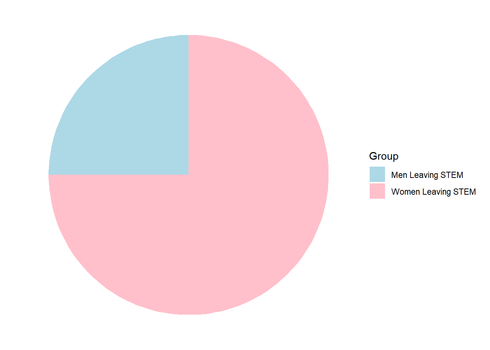

Gender Disproportion in STEM: Under-Represented Women Population
Gender Disparity in STEM
The underrepresentation of women in STEM (Science, Technology, Engineering, and Mathematics) fields remains a deeply ingrained issue with far-reaching consequences. Despite progress in some areas, the gender imbalance is stark: women represent only 28.2% of the STEM workforce, a significant contrast to their 47.3% representation in non-STEM sectors. Even more concerning is the underrepresentation of women in leadership roles in STEM, with women holding just over 10% of these positions (Pal, Piaget, and Zahidi 2024), seeTable 1. As technology and innovation continue to shape our future, closing this gender gap is crucial not only for fairness but also for creating a diverse and comprehensive landscape that better addresses global challenges.
While countries like Iceland, Finland, and Norway have made strides in promoting gender equality in many sectors, STEM remains one of the most stubborn areas for gender equity. This issue limits career opportunities for women, undermining personal development, economic independence, and the overall growth of these fields (Education n.d.). This issue has been ongoing for decades and continues to persist, with some progress made in recent years, but the gap remains substantial.
Raising Awareness and Encouraging Change
Research underscores the significant barriers women face in STEM, not just in terms of access to opportunities but also in terms of ongoing systemic challenges (Education n.d.). Women in these fields encounter unconscious bias, gendered stereotypes, and the threat of social exclusion. As a result, women are nearly 20% more likely to leave STEM careers than their male counterparts, as demonstrated in Table 2. These challenges are even more pronounced in high-demand fields such as artificial intelligence (AI), programming, and cybersecurity, where women continue to face substantial barriers (Pal, Piaget, and Zahidi 2024).

Your Effort by Browsing This Website!
This website was created to: - Raise awareness about the under-representation of women in STEM fields. - Encourage collective action toward closing the gender gap in STEM. - Provide insights into the underlying causes of gender disparity in STEM. - Advocate for those in positions of power over STEM fields to take action and shape the future of STEM with greater gender equality.
By everyone understanding why the gender disparity in STEM exists and recognizing the current state of the situation, we can all play a part in addressing the issue. It’s not just about one group or individual making changes; it’s about fostering a collective effort!
Together, we can create lasting change and inspire future generations!
References
Education, National Geographic. n.d. “Women Fighting Stereotypes and Systemic Discrimination in STEM.” National Geographic Society.
Pal, K. K., K. Piaget, and S. Zahidi. 2024. “Global Gender Gap Report 2024.” World Economic Forum. https://www.weforum.org/publicat.